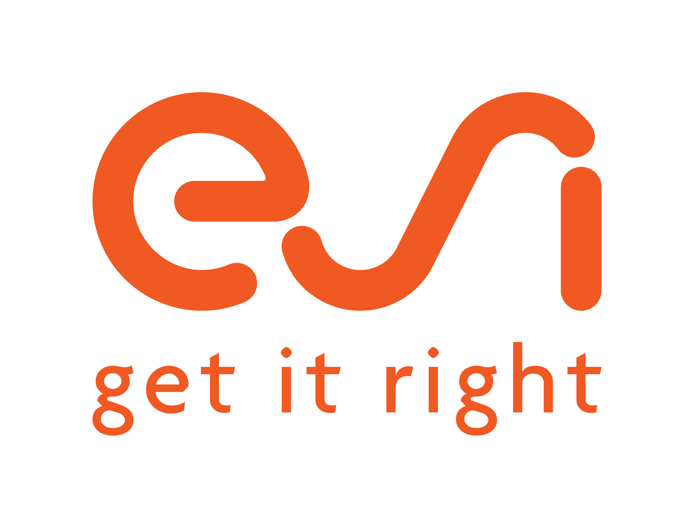
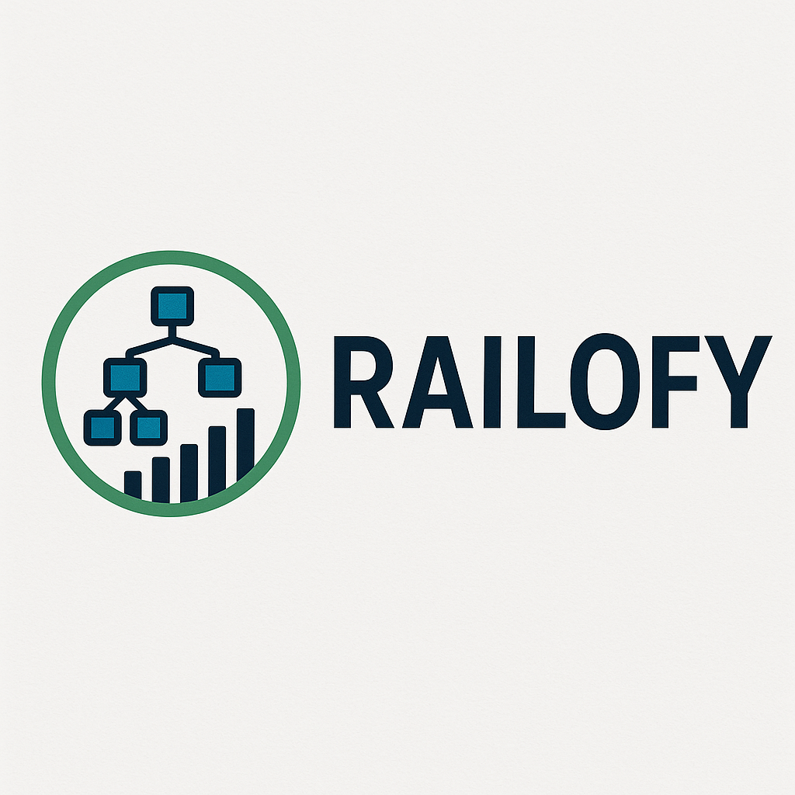
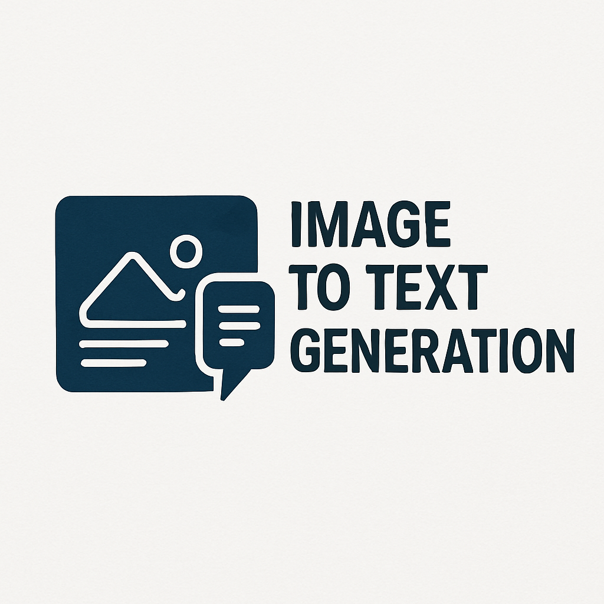

Naga Pavithra Lagisetty
Data Scientist & Software Engineer
About Me
Passionate Data Scientist and Software Engineer with expertise in machine learning, computer vision, and full-stack development. Experienced in building innovative solutions that bridge the gap between data and business value.
Education
Northeastern University
Sep 2024 - Dec 2026Master's in Data Science
GPA: 4.0/4.0

Bangalore Institute of Technology
Dec 2020 - May 2024Bachelor's in Computer Science
GPA: 3.5/4.0

Technical Skills
Languages
C/C++, Java, Python
Web Technologies
HTML5, CSS3, PHP, JavaScript, Bootstrap
Database
MySQL, Neo4j, ArangoDB, OrientDB, MongoDB
Frameworks
OpenGL, Express.js, React.js, TensorFlow, PyTorch, Scikit-learn
Data Science Tools
Pandas, NumPy, Matplotlib, Seaborn, Jupyter Notebook, NLTK, Keras, OpenCV
Relevant Coursework
Data Structures & Algorithms, Operating Systems, Object Oriented Programming, Database Management System, Software Engineering
Work Experience

Shezaar
Machine Learning Engineer
July 2025 – Dec 2025- Designed and deployed an end to end ML pipeline for a CLIP-based multimodal recommendation engine, generating joint text image embeddings and performing vector similarity search across 30,000+ scraped products to deliver visually and semantically aligned recommendations.
- Built a Chrome extension to automate large scale web scraping via DOM parsing, extracting product metadata and images to compute safety, material quality, labor and impact scores
- Integrated an LLM powered semantic analysis module to crawl and interpret webpage content, generating structured insights.

AtkinsRéalis
Data Scientist Intern
Mar 2024 – Jul 2024- Engineered a vehicle detection system using YOLOv7 for vehicle tagging with appropriate IDs as part of the Heathrow project
- Developed a solution to generate timestamped CSV reports, leveraging StrongSORT for accurate tracking with 85% accuracy
- Automated data extraction using BeautifulSoup and regular expressions, efficiently parsing dynamic content from conference websites
- Leveraged Azure Machine Learning for model deployment and performance scaling

Zintlr Private Limited
SDET Intern
Jan 2024 – Feb 2024- Played an integral role in the RegMark 360 project at Microlabs, generating over 100 Jira tickets that identified bugs and proposed new features
- Achieved 20% reduction in software bugs and improved overall performance
- Enhanced platform performance through comprehensive PSI assessments, resulting in 30% improvement in system scalability
Bangalore Institute of Technology
Research Intern
Sep 2023 - Dec 2023- Conducted comparative analysis of 3 feature extraction techniques (HOG, DWT, ResNet50) and 6 machine learning algorithms
- Achieved 95% accuracy in classifying corn leaf diseases using ResNet50 and SVC with RBF kernel
- Executed comprehensive 4-step methodology for corn disease detection, processing over 4,000 images across 4 disease classes

ESI Software Pvt Ltd
SDE Intern
Mar 2023 – May 2023- Developed a Spring Boot application to interface with Neo4j database, automating data retrieval and population
- Achieved 30% reduction in manual data entry time and improved data consistency
- Wrote effective Cypher queries to establish and maintain proper relationships within the Neo4j database
Projects
HoodVisors
Python, Streamlit- Developed a Chrome extension that evaluates the safety score of Zillow listings by analyzing crime data from the Boston PD, considering crime rates by zipcode and street.
- Built a predictive model using XGBoost,used latitude and longitude to evaluate neighborhood safety, providing users with safety insights.

Railofy
Python, Machine Learning- Developed and implemented a machine learning solution using Random Forest Classifier, achieving 85% accuracy
- Successfully handled class imbalance and conducted comprehensive data preprocessing
- Implemented data encoding, standardization, and data exploration with visualizations

Image-to-Text Generation
Python, Deep Learning- Developed an image captioning model leveraging ResNet-50, ResNet-101, and other variants
- Combined ResNet with LSTM for sequence generation
- Conducted comparative analysis of different ResNet architectures, improving captioning accuracy by 7%
Research Work
Harnessing Machine Learning for Accurate Corn Leaf Disease Classification
Contact
Boston, Massachusetts, 02130
(203) 667-5094
nagapavithralagisetty@gmail.com